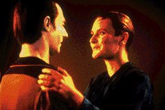
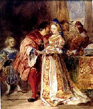
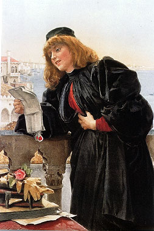
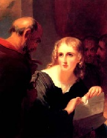

|

Texto de
Susana
Lopes de Alexandria
Data cita clebre bardo
ingls em piada

|
 A doena que se espalhou na Enterprise, deixando os infectados como que alcoolizados, surpreendentemente tambm contagiou Data. Quando o capito v o andride na ponte com os sintomas da doena, alega que ele no poderia ter sido infectado pelo vrus, pois no humano. Data ento responde: "We are moke alike than unlike, my dear captain. I have pores; humans have pores. I have fingerprints; humans have fingerprints. My chemical nutrients are like your blood. If you prick me, do I not... leak?" "Somos mais parecidos do que diferentes, meu caro capito. Eu tenho poros; humanos tm poros. Eu tenho impresses digitais; humanos tm impresses digitais. Meus nutrientes qumicos so como seu sangue. Se voc me espeta, eu no... vazo?" Essa resposta de Data foi uma brincadeira com uma famosa passagem da comdia "O Mercador de Veneza" (The Merchant of Venice), de Shakespeare. Vamos ver a seguir um resumo da pea, exatamente de qual trecho da essa referncia foi retirada e por que a piada se perde na traduo para o portugus. Shylock, o judeu, vivia em Veneza, na Itlia. Havia acumulado enorme riqueza emprestando dinheiro a juros altssimos a mercadores cristos. Shylock no tinha simpatia por cristos, tanto que, quando soube que sua filha havia fugido para se casar com um cristo, ele a deserdou. Shylock, por sua vez, era malquisto por todos os mercadores e homens de bem, particularmente Antnio, jovem comerciante de Veneza. O judeu tambm o odiava, porque Antnio costumava emprestar dinheiro aos necessitados sem cobrar nada. Havia, pois, grande inimizade entre o judeu Shylock e o mercador Antnio.  Naquela ocasio, Antnio no dispunha do dinheiro, mas como estava auardando alguns navios carregados de mercadorias, decidiu procurar Shylock, o judeu, e tomar a quantia emprestada, dando como garantia os navios. Antnio e Bassnio foram juntos casa de Shylock. Ouvindo o pedido de emprstimo, Shylock pensou consigo que aquela talvez fosse a oportunidade de vingar-se de Antnio, que tantos improprios havia lhe dito ao longo dos anos. Disse ento ao mercador que lhe emprestaria o dinheiro sem cobrar juro nenhum, e que fazia isso para conquistar sua amizade. Tudo o que Antnio deveria fazer era ir com ele a um advogado e assinar um contrato em que ficaria estipulado que, se ele no pagasse o dinheiro no dia marcado, perderia uma libra (cerca de meio quilo) de sua prpria carne, que seria cortada de qualquer parte de seu corpo, escolha de Shylock. Apesar dos protestos de Bassnio, Antnio aceitou a proposta e assinou o contrato, certo de que se tratava apenas de uma brincadeira. Prcia, a rica herdeira com quem Bassnio desejava casar-se, morava perto de Veneza, num lugar chamado Belmonte. Com o dinheiro que Antnio lhe emprestara, Bassnio seguiu para Belmonte numa esplndida carruagem, acompanhado de um jovem chamado Graciano (Gratiano, no original). Pediu Prcia em casamento (veja ilustrao), confessando que no possua bens, mas apenas o ttulo de nobreza de sua famlia. Prcia o aceitou como marido, alegando ter dinheiro suficiente e no precisar de um marido rico. Graciano e Nerissa, dama de companhia de Prcia, vendo os patres trocarem juras de amor, pediram licena para se casarem no mesmo dia. Bassnio e Prcia ficaram muito felizes com a notcia de que seus empregados estavam apaixonados e consentiram no casamento. Esse momento de felicidade foi interrompido por um mensageiro que trazia uma carta para Antnio. Ao ler a carta, Antnio ficou plido: nela, Antnio dizia que seus navios haviam se perdido e que ele deveria cumprir o contrato assinado com Shylock. Como isso certamente implicaria em sua morte, ele desejava ver o amigo Bassnio antes de morrer.  Como j se passara o dia do pagamento, o cruel judeu no quis aceitar o dinheiro que Bassnio lhe ofereceu, insistindo em receber a libra de carne de Antnio. Marcou-se o dia do julgamento em presena do duque de Veneza, e nada restou a Bassnio seno esperar ansiosamente pelo resultado. Prcia, preocupada com a sorte do amigo de Bassnio, resolveu ajud-lo. Como tinha um parente advogado, escreveu-lhe uma carta expondo o caso e solicitando seu parecer e quais os trajes habituais dos advogados. Assim que recebeu a resposta, Prcia e Nerissa vestiram-se de homens e, trajando a toga de advogado, Prcia partiu para Veneza (veja ilustrao) levando Nerissa como seu secretrio . A causa ia comear a ser discutida diante do duque e dos senadores quando Prcia chegou, alegando estar ali em nome de outro advogado, e solicitou permisso para fazer a defesa de Antnio. O duque deferiu o pedido, surpreso com a aparncia juvenil do advogado, muito bem disfarado pela toga e pela enorme cabeleira. Prcia olhou sua volta e viu o impiedoso judeu. Viu tambm Bassnio, seu marido, que no a reconheceu, junto do aflito Antnio. Prcia ento comeou sua defesa, tentando de toda maneira demover o judeu da idia de levar a cabo o cumprimento do terrvel contrato. Ofereceu-lhe dinheiro, argumentou o quanto pde, mas o judeu estava inflexvel. Prcia pediu ento para examinar o contrato (veja ilustrao) e reconheceu que o judeu tinha o direito de receber sua libra de carne. Disse a Antnio que preparasse seu peito para a faca. Sob a expectativa do tribunal, o impiedodo judeu passou a afiar a lmina, e Prcia perguntou se a balana estava pronta para pesar a carne. Ento dirigiu-se a Shylock, perguntando se ele havia trazido consigo um cirurgio, para que a perda de sangue no matasse Antnio. Shylock, cuja nica inteno era a morte de Antnio, alegou que aquilo no estava no contrato.  Ora, como era absolutamente impossvel a Shylock cortar a libra de carne sem derramar um pouco de sangue de Antnio, o achado de Prcia salvou a vida de Antnio. Admirados com a sagacidade do jovem advogado, que encontrara uma sada, todos os presentes comearam a aplaudi-lo. O judeu acabou perdendo todo o seu dinheiro, por ter conspirado contra a vida de um cristo. Pela deciso do duque, metade iria para Antnio e a outra metade para o Estado. Antnio recusou o dinheiro, sob a condio de que Shylock assinasse um contrato em que deixaria seus bens para sua filha, a que fora deserdada por casar-se com um cristo. E o duque prometeu devolver a outra metado ao judeu caso ele se convertesse f crist. Mais tarde, j de volta a Belmonte, Prcia e Nerissa revelaram aos maridos e a Antnio toda a aventura do disfarce, acrescentando que os navios de Antnio no haviam se perdido, mas estavam atracados a um porto, seguros e intactos. A passagem da pea a que Data faz referncia est na cena 1 do ato 3. Nesta cena, o judeu Shylock encontra com dois conhecidos, Salarino e Solnio, que lhe perguntam por que ele quer o cumprimento do contrato com Antnio, j que uma libra de carne humana no valia nada. Shylock argumenta que aquele pedao de carne iria alimentar sua vingana, pois Antnio o ofendera vrias vezes, pelo simples fato de ele ser judeu. Ele ento diz: "Hath not a Jew eyes? hath not a Jew hands, organs, dimensions, senses, affections, passions? fed with the same food, hurt with the same weapons, subject to the same diseases, heal'd by the same means, warm'd and cool'd by the same winter and summer, as a Christian is? If you prick us, do we not bleed? if you tickle us, do we not laugh? if you poison us, do we not die? and if you wrong us, shall we not revenge? if we are like you in the rest, we will resemble you in that. If a Jew wrong a Christian, what is his humility? revenge: if a Christian wrong a jew, what should his sufferance be by Christian example? why, revenge." "Um judeu no tem olhos? um judeu no tem mos, rgos, dimenses, sentidos, afeies, paixes? no alimentado pela mesma comida, ferido pelas mesmas armas, sujeito s mesmas doenas, curado pelos mesmos remdios, aquecido e esfriado pelo mesmo inverno e vero que um cristo? Se voc nos espeta, no sangramos? se nos faz ccegas, no rimos? se nos envenena, no morremos? e se nos causam ofensas, no podemos nos vingar? se somos como vocs no resto, seremos parecidos nisso tambm. Se um judeu ofende um cristo, qual sua pena? vingana: se um cristo ofende um judeu, qual deve ser seu direito, seguindo o exemplo cristo? ora, vingana." Da mesma forma que o
judeu Shylock, Data quis mostrar ao capito Picard que ele tambm
no era to diferente assim dos humanos. A brincadeira est
principalmente na frase "if you prick us, do we not
bleed?" (se voc nos espeta, no sangramos?). O andride
diz "if you prick me, do I not leak?" (se voc
me espeta, eu no vazo?). Obviamente, o andride no sangra
(bleed), mas se ele for espetado, seu nutriente qumico vai vazar
(leak). A piada est na semelhana sonora das palavras
"bleed" e "leak", que se perde na traduo.
|